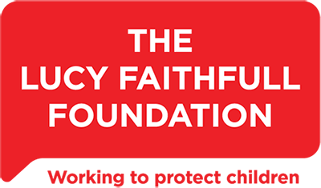

It's never historic.
Child sexual abuse and exploitation is blending together into a new cross -Government programme of work.
We need to understand the voice of victims and survivors that this is never historic – adults of 80 can still recall the trauma of child sexual abuse at 8.
We are beginning to understand the mindset of perpetrators and this is sensitive – we must be ready to react to anyone who might be indicating signs of possible or probable child sexual abuse and act accordingly.
The Lucy Faithful Foundation can support.
